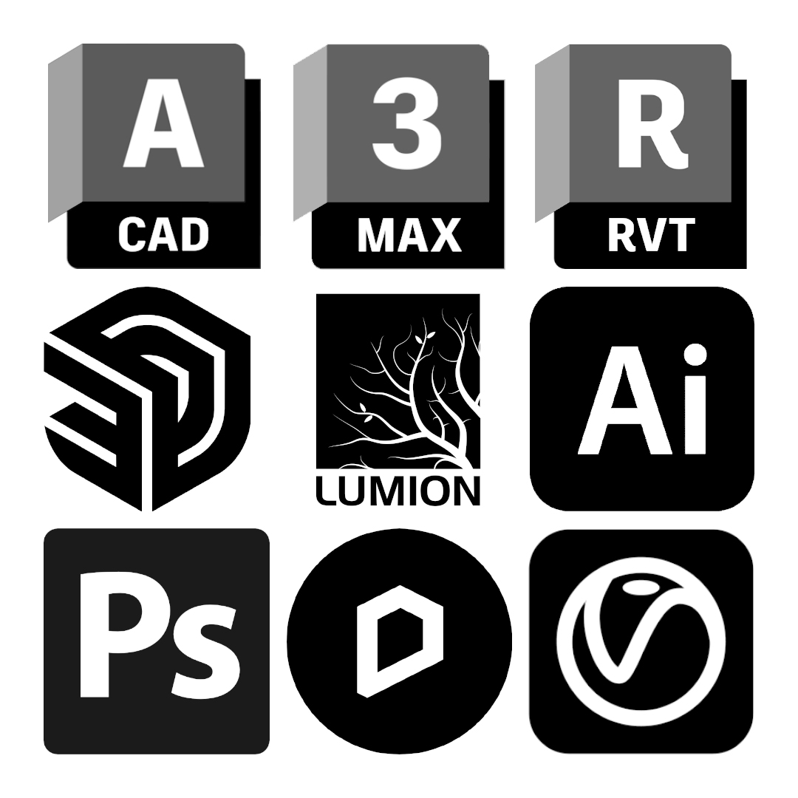
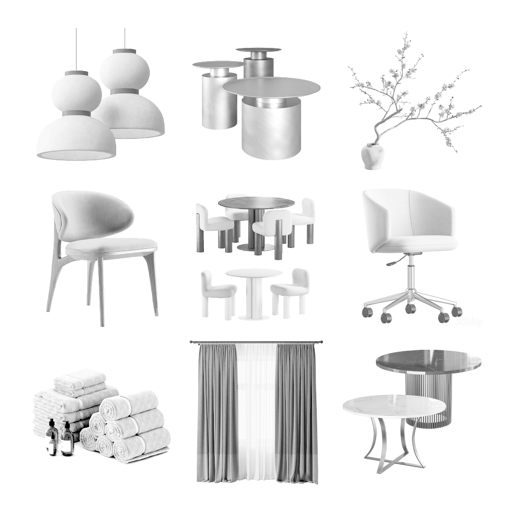
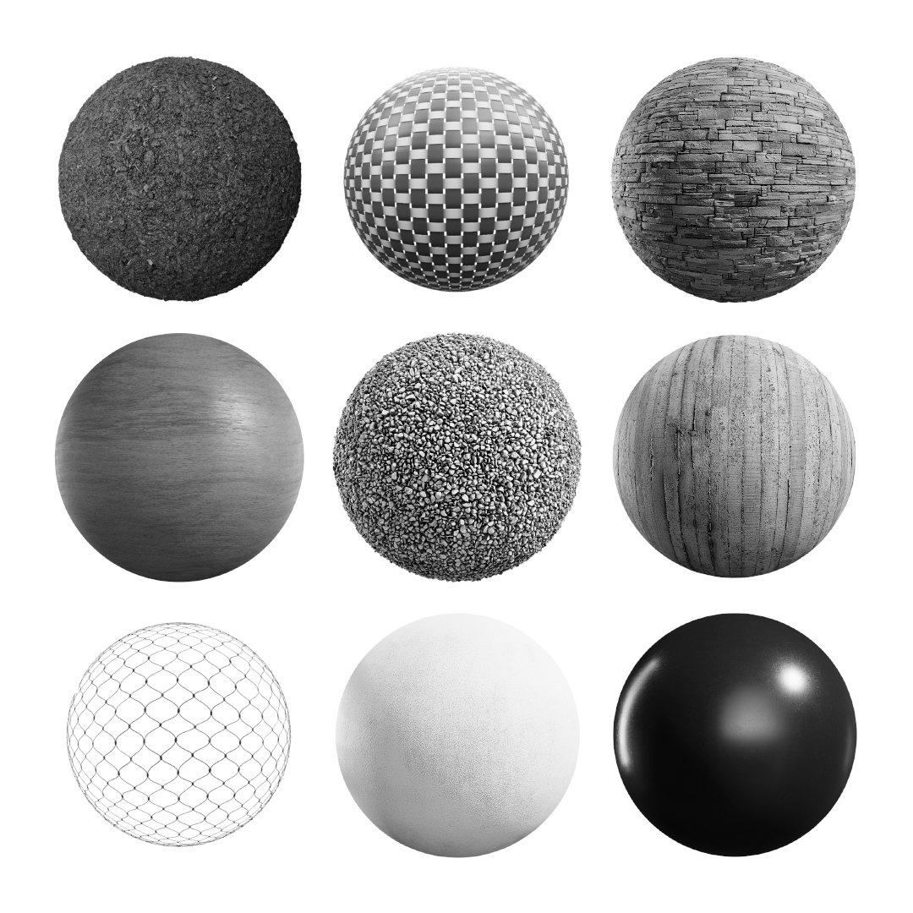
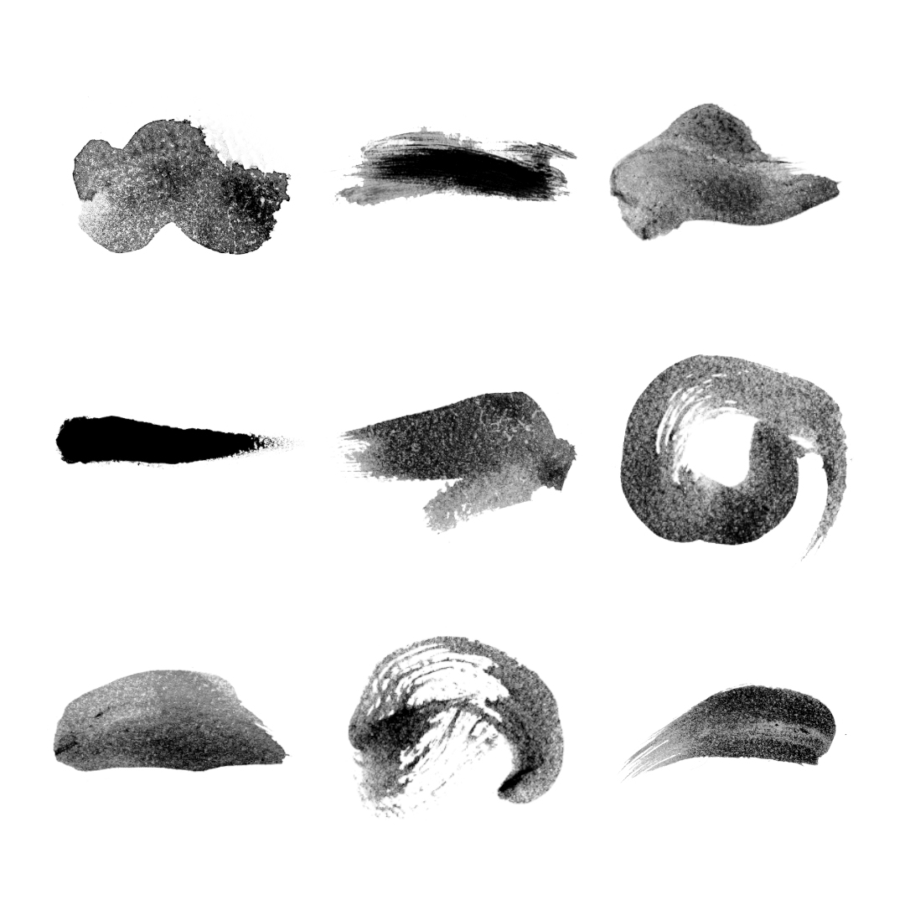
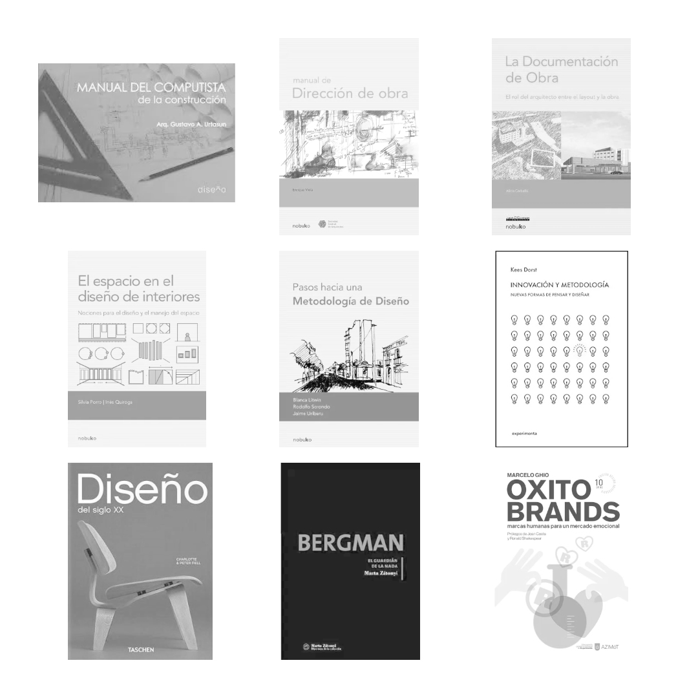

Materiales y Recursos
En esta sección reunimos una colección curada de materiales útiles para estudiantes, profesionales y entusiastas de la arquitectura. Vas a encontrar desde programas y herramientas digitales, hasta bibliotecas 3D, texturas, plantillas, manuales, y otros recursos que usamos o recomendamos en nuestro estudio. Nuestro objetivo es que tengas a mano elementos que te ayuden a trabajar con mayor eficiencia, mejorar tus presentaciones, acelerar tus procesos creativos o simplemente descubrir nuevas formas de potenciar tus proyectos. Esta biblioteca digital se actualiza constantemente. Si tenés alguna sugerencia o necesitás algo específico, podés escribirnos.
Programas y utilidades
En esta sección podés acceder a una recopilación de programas esenciales para arquitectura, diseño y visualización. Encontrarás instaladores, versiones de prueba, enlaces a software gratuito o herramientas que usamos frecuentemente en nuestro estudio. Todos los recursos están organizados para que puedas ver detalles y descargar fácilmente según tus necesidades.
Asegurate de verificar los requisitos del sistema antes de instalar. En algunos casos, se incluyen enlaces externos a páginas oficiales o repositorios seguros.
Bibliotecas 3D y componentes
Encontrá aquí una selección de modelos 3D listos para usar en tus proyectos de arquitectura, diseño o visualización. Esta biblioteca incluye mobiliario, vegetación, artefactos, personas y otros elementos que te ayudan a enriquecer tus escenas de forma rápida y realista. Todos los componentes están organizados por categoría y en formatos compatibles con los programas más utilizados: SketchUp, 3ds Max, Revit, AutoCAD y más. Ideales para agilizar el armado de escenas, aportar escala humana o complementar tus renders sin tener que modelar desde cero.
Algunos archivos están optimizados para motores de render como V-Ray, Enscape o Lumion.
Texturas y materiales
Accedé a una colección organizada de texturas y materiales listos para usar en motores de render como V-Ray, Enscape, Lumion o Twinmotion. Encontrarás superficies PBR, mapas difusos, normales y de relieve, ideales para lograr realismo en tus visualizaciones arquitectónicas. Incluye materiales de hormigón, madera, ladrillo, metal, cerámicos, textiles y más. Todos los archivos están optimizados en resolución, listos para aplicar en tus escenas o modificar según el proyecto.
Algunos paquetes incluyen configuraciones prearmadas para facilitar su uso inmediato en SketchUp, 3ds Max, Revit u otros programas.
Pinceles para Photoshop
En este apartado vas a encontrar herramientas pensadas para potenciar tus renders y presentaciones gráficas. Reunimos una colección de pinceles personalizados, archivos .PSD editables, overlays y elementos de ambientación que usamos en nuestro flujo de trabajo para lograr una postproducción ágil y efectiva. Los recursos incluyen pinceles de vegetación, sombras, suciedad, luces, cielos, texturas atmosféricas, así como archivos con capas organizadas que podés estudiar o adaptar a tus propias imágenes. Todo está pensado para optimizar tu tiempo y elevar la calidad visual de tus entregas.
Manuales, Guías y Libros
En esta sección vas a encontrar manuales técnicos, guías prácticas y libros digitales vinculados al mundo de la arquitectura y disciplinas afines. Incluye contenidos teóricos y aplicados sobre diseño arquitectónico, construcción, normativa, representación, así como también publicaciones sobre diseño gráfico, industrial, arte, urbanismo, paisaje y otras materias complementarias que enriquecen la mirada proyectual. La biblioteca está pensada como un espacio de consulta para estudiantes, docentes y profesionales, con recursos que ayudan tanto a resolver cuestiones técnicas como a inspirar procesos creativos.
Plantillas y Archivos Editables

Encontrá en esta sección una variedad de plantillas listas para usar y adaptar según tus necesidades. Están pensadas para ayudarte a presentar, documentar y organizar tus proyectos de forma profesional, rápida y prolija. Incluye láminas base en distintos formatos, plantillas de memoria descriptiva, presupuestos, planillas de cómputo, rótulos para planos, cronogramas, contratos y otros documentos útiles tanto en el ámbito académico como profesional.
Todos los archivos son editables (Word, Excel, DWG, Illustrator o PDF), y están organizados por categoría para que puedas encontrar lo que necesitás en pocos clics.